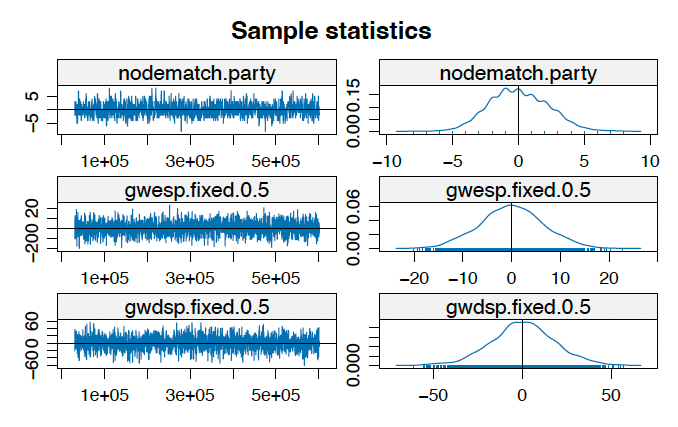
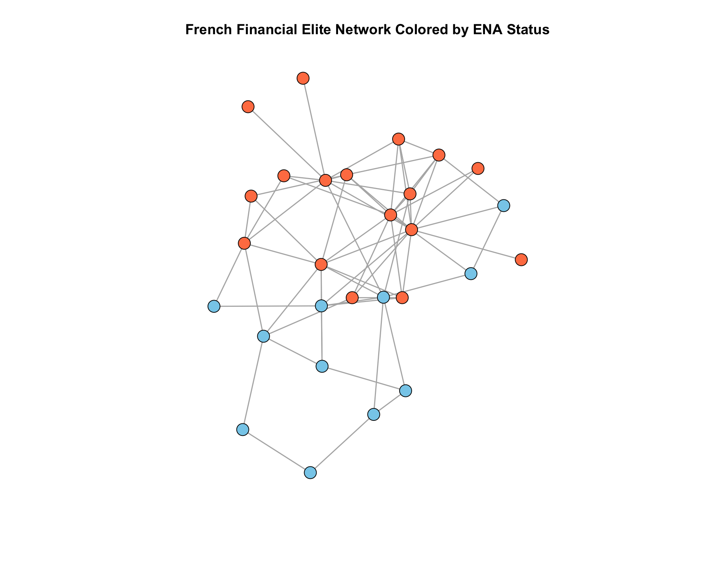
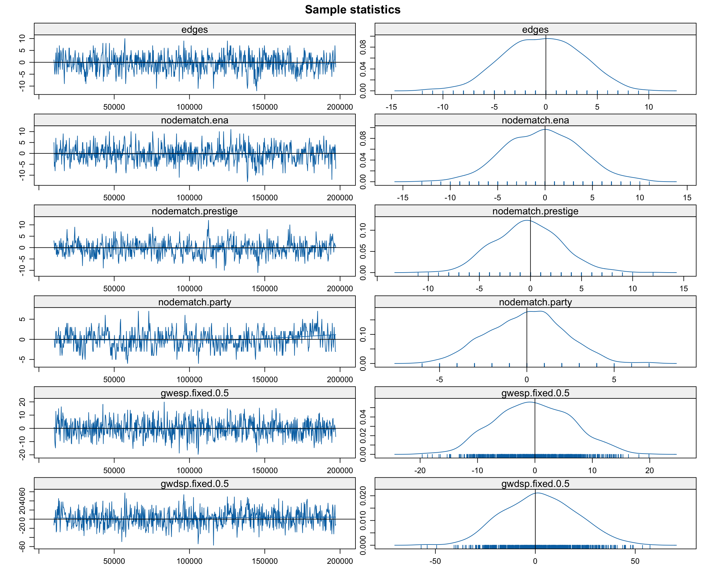

Welcome to Part 7 of our Social Network Analysis R Tutorial series! In our previous tutorial (Part 6), we explored the theoretical foundations of ERGMs, understanding the mathematical framework behind these powerful models. We covered the exponential family form, sufficient statistics, and the challenges of model degeneracy.
In this post, we will advance into sophisticated ERGM modeling by incorporating complex structural terms that capture network dependencies beyond simple dyadic relationships. We’ll explore geometrically weighted statistics, perform comprehensive MCMC diagnostics, and learn to interpret results in meaningful sociological contexts.

After completing this tutorial, you will be able to:
Perform and interpret MCMC convergence diagnostics
Compare nested models and assess model fit
Interpret complex ERGM results in substantive terms
Handle model degeneracy using tapered ERGMs
Code
rm(list =ls())library(network) # Network object manipulationlibrary(ergm) # ERGM fittinglibrary(networkdata) # Network datasetslibrary(sna) # Social network analysis toolslibrary(ergm.tapered) # Tapered ERGM for handling degeneracy# Install ergm.tapered if needed# devtools::install_github("statnet/ergm", ref="tapered")
Note
Why ergm.tapered?
The ergm.tapered package provides an alternative estimation method that better handles models with strong dependence between terms. When you include multiple structural terms (like gwesp and gwdsp), standard ERGM estimation can struggle with convergence. Tapered ERGM adds a “tapering” mechanism that helps stabilize estimation.
Software available on GitHub as ergm.tapered: https://github.com/statnet/ergm.tapered
1. Introduction for Advanced Structural Terms in ERGMs
Before diving into applications, let’s understand the sophisticated structural terms available in ERGMs. These terms capture complex network dependencies while avoiding the degeneracy issues that plague simpler specifications.
Note
Why Geometrically Weighted Terms? Traditional count statistics (like triangle counts) can lead to model degeneracy because they treat all configurations equally. Geometrically weighted terms apply diminishing returns - the first few shared partners matter more than additional ones, making the model more stable and interpretable.
1.2 Comprehensive Function Reference Table
Here’s a detailed reference table for advanced ERGM structural terms:
Function
Syntax
Description
Interpretation
When to Use
istar(k)
istar(2)
k-in-stars: counts nodes with exactly k incoming edges
Popularity effects in directed networks
Testing for preferential attachment to popular nodes
ostar(k)
ostar(2)
k-out-stars: counts nodes with exactly k outgoing edges
Activity effects in directed networks
Testing for variation in node activity levels
gwodegree(decay)
gwodegree(0.5, fixed=TRUE)
Geometrically weighted out-degree distribution
Controls out-degree heterogeneity with diminishing returns
Modeling sender activity patterns without degeneracy
gwidegree(decay)
gwidegree(0.5, fixed=TRUE)
Geometrically weighted in-degree distribution
Controls in-degree heterogeneity with diminishing returns
Modeling popularity/receiver effects without degeneracy
gwesp(decay)
gwesp(0.5, fixed=TRUE)
Geometrically weighted edgewise shared partners
Transitivity: “friend of friend is friend” with diminishing returns
Capturing clustering while avoiding degeneracy
gwdsp(decay)
gwdsp(0.5, fixed=TRUE)
Geometrically weighted dyadwise shared partners
Shared partners between any dyad (connected or not)
Modeling local clustering and “small world” effects
ctriple
ctriple or ctriad
Cyclic triples: A→B→C→A patterns
Non-hierarchical, cyclic relationships
Testing for cyclic vs hierarchical structures
ttriple
ttriple or ttriad
Transitive triples: A→B→C with A→C
Hierarchical, transitive closure
Testing for transitivity and balance theory
Tip
Choosing Decay Parameters The decay parameter (α) in geometrically weighted terms controls how quickly the weight diminishes:
α = 0: Only the first shared partner matters
α = 0.5: Moderate decay (common choice)
α = 1.0: Slower decay, more weight on higher numbers
α → ∞: Approaches regular count statistics
Start with α = 0.5 as a default and adjust based on model diagnostics.
2. Case Study 1 - The French Financial Elite Network
2.1 The French Financial Elite Network Basic Information
We’ll work with a network collected by Charles Kadushin (1995) of 28 members of the French financial elite. This network captures friendship ties and includes rich vertex attributes that allow us to explore multiple dimensions of homophily.
Data Source:
Kadushin, C. 1995. Friendship among the French financial elite. American Sociological Review 60:202-221.
The network includes several important vertex covariates:
prestige: 0 (neither particule nor social register), 1 (either), or 2 (both)
party: Political party membership (11 parties)
ena: Graduated from ENA (École nationale d’administration)? 1=yes, 2=no
masons: Mason membership
religion: Religious affiliation
topboards: Number of top corporate boards
Code
ena_status <- ffef %v%"ena"vertex_colors <-ifelse(ena_status ==1, "coral", "skyblue")plot(ffef, vertex.col = vertex_colors, main ="French Financial Elite Network Colored by ENA Status", vertex.cex =1.5, edge.col ="gray70")

Observations:
Visible clustering by ENA attendance: Individuals who graduated from ENA tend to form connections with other ENA graduates, suggesting strong educational homophily
Centrality patterns: ENA graduates appear more concentrated in the network core, while non-ENA graduates are more dispersed around the periphery
Cross-group ties exist: While there’s clear same-status clustering, we also observe connections between ENA and non-ENA graduates
2.2 Building a Sophisticated ERGM Model
Code
#using ergm.tapered() for better handling of strong dependenciesfit_elite <-ergm.tapered( ffef ~ edges +# Baseline densitynodematch("ena") +# ENA homophilynodematch("prestige") +# Prestige homophilynodematch("party") +# Political party homophilygwesp(0.5, fixed =TRUE) +# Transitive closure (clustering)gwdsp(0.5, fixed =TRUE), # Shared partnersverbose =FALSE)summary(fit_elite)
cat("Same party affiliation:", round(party_match_prob, 4), "\n")
Same party affiliation: 0.0305
Edges:\(\beta = -4.63\) represent the baseline log-odds of a friendship tie existing between any two randomly selected individuals in the networks, while controlling other predictors. The strong negative coefficient indicates this is a very sparse network. The \(OR = 0.010\) means the baseline odds of a tie is about 1.0%. The baseline robability of friendship is approximately 0.96%.
nodematch.ena:\(\beta = 1.57\) measures homophily on ENA attendance. The \(OR = 4.79\) means that two individuals who share ENA status (both graduate from ENA or both did not) have 4.79 times higher odds of being friends compared to two individuals with different ENA status. The coefficient is strong and highly significant. And the probability of a friendship tie between two individuals who share the same ENA status is 4.45%.
nodematch.prestige:\(\beta = 0.68\) measures homophily on prestige level (having particule and/or social register listing).The coefficient is moderate and significant (p = 0.015). The \(OR = 1.97\) mean that two individuals with the same prestige level have 1.97 times higher odds of being friends compared to those with different prestige levels. The probability of a friendship tie between two individuals who share the same prestige level is 1.88%.
nodematch.party:\(\beta = 1.25\) measures homophily on political party affiliation. The coefficient is strong and highly significant (p < 0.001).The \(OR = 3.49\) means that two individuals from the same political party have 3.49 times higher odds of being friends compared to those from different parties. The probability of a friendship tie between two individuals who share the same party affiliation is 3.28%.
GWESP(0.5):\(\beta = 0.43\) measures transitivity and clustering through Geometrically Weighted Edgewise Shared Partners. This term captures the “friend of a friend is a friend” phenomenon. The coefficient is moderate and significant (p = 0.013). The \(OR = 1.53\) indicates that networks with more shared partners (triangles) are more probable. The French financial elite network exhibits strong transitivity. If person A is friends with person B, and person B is friends with person C, then A and C are significantly more likely to also be friends.
GWDSP(0.5):\(\beta = 0.19\) measures local network structure through Geometrically Weighted Dyadwise Shared Partners. This term captures the tendency for dyads (pairs) to share partners, even if they’re not directly connected. The coefficient is modest but significant (p = 0.003). The \(OR = 1.21\) indicates preference for configurations where individuals share common friends. Beyond direct transitivity, there’s a tendency for individuals to be embedded in overlapping social circles. This creates a “small world” structure where even if two people aren’t direct friends, they’re likely to share mutual acquaintances.
Note
plogis(coef["edges"] + coef["gwesp.fixed.0.5"])
This does NOT work because:
GWESP is not a 0/1 indicator variable
GWESP is a count statistic that depends on the entire network structure
Sample statistics summary:
Iterations = 9984:197120
Thinning interval = 256
Number of chains = 1
Sample size per chain = 732
1. Empirical mean and standard deviation for each variable,
plus standard error of the mean:
Mean SD Naive SE Time-series SE
edges -0.37842 3.722 0.13758 0.1644
nodematch.ena -0.25000 3.973 0.14684 0.1748
nodematch.prestige -0.29235 3.273 0.12098 0.1831
nodematch.party -0.02322 2.174 0.08035 0.1291
gwesp.fixed.0.5 -0.19374 6.637 0.24532 0.2453
gwdsp.fixed.0.5 2.50133 18.332 0.67756 0.7931
2. Quantiles for each variable:
2.5% 25% 50% 75% 97.5%
edges -7.725 -3.000 0.0000 2.000 6.725
nodematch.ena -8.000 -3.000 0.0000 3.000 8.000
nodematch.prestige -6.000 -2.250 0.0000 2.000 6.000
nodematch.party -4.000 -2.000 0.0000 1.000 4.000
gwesp.fixed.0.5 -11.875 -4.982 -0.3306 4.575 12.947
gwdsp.fixed.0.5 -30.923 -10.000 1.9447 14.795 38.260
Are sample statistics significantly different from observed?
edges nodematch.ena nodematch.prestige nodematch.party
diff. -0.3784153 -0.2500000 -0.2923497 -0.02322404
test stat. -2.3020120 -1.4300338 -1.5964703 -0.17995146
P-val. 0.0213345 0.1527073 0.1103838 0.85719067
gwesp.fixed.0.5 gwdsp.fixed.0.5 Overall (Chi^2)
diff. -0.1937426 2.501327124 NA
test stat. -0.7897416 3.153789509 20.667899611
P-val. 0.4296787 0.001611653 0.002732234
Sample statistics cross-correlations:
edges nodematch.ena nodematch.prestige nodematch.party
edges 1.0000000 0.70831695 0.38636757 0.17473251
nodematch.ena 0.7083169 1.00000000 0.20351520 0.08771288
nodematch.prestige 0.3863676 0.20351520 1.00000000 0.02346102
nodematch.party 0.1747325 0.08771288 0.02346102 1.00000000
gwesp.fixed.0.5 0.6485533 0.53125096 0.16732228 0.08451040
gwdsp.fixed.0.5 0.5912691 0.25880435 0.19755469 0.09857144
gwesp.fixed.0.5 gwdsp.fixed.0.5
edges 0.6485533 0.59126909
nodematch.ena 0.5312510 0.25880435
nodematch.prestige 0.1673223 0.19755469
nodematch.party 0.0845104 0.09857144
gwesp.fixed.0.5 1.0000000 0.54387391
gwdsp.fixed.0.5 0.5438739 1.00000000
Sample statistics auto-correlation:
Chain 1
edges nodematch.ena nodematch.prestige nodematch.party
Lag 0 1.00000000 1.000000000 1.00000000 1.0000000
Lag 256 0.17549198 0.172024313 0.28672574 0.4407665
Lag 512 0.07861936 0.044085462 0.11872718 0.2268692
Lag 768 0.04693548 0.007762898 0.11514094 0.1602980
Lag 1024 -0.02103196 -0.051723764 0.04807089 0.1281802
Lag 1280 -0.02029358 -0.099292509 -0.01649838 0.1258441
gwesp.fixed.0.5 gwdsp.fixed.0.5
Lag 0 1.000000000 1.00000000
Lag 256 0.014344672 0.04082106
Lag 512 0.018225222 0.05753242
Lag 768 0.007010241 0.06270653
Lag 1024 -0.038911261 -0.00166690
Lag 1280 -0.058851029 0.02978338
Sample statistics burn-in diagnostic (Geweke):
Chain 1
Fraction in 1st window = 0.1
Fraction in 2nd window = 0.5
edges nodematch.ena nodematch.prestige nodematch.party
1.1828 0.2123 1.2710 -0.4160
gwesp.fixed.0.5 gwdsp.fixed.0.5
0.3638 -0.2401
Individual P-values (lower = worse):
edges nodematch.ena nodematch.prestige nodematch.party
0.2369010 0.8319044 0.2037202 0.6774413
gwesp.fixed.0.5 gwdsp.fixed.0.5
0.7160131 0.8102226
Joint P-value (lower = worse): 0.8553903 .

MCMC diagnostics shown here are from the last round of simulation, prior to computation of final parameter estimates. Because the final estimates are refinements of those used for this simulation run, these diagnostics may understate model performance. To directly assess the performance of the final model on in-model statistics, please use the GOF command: gof(ergmFitObject, GOF=~model).
Note
MCMC Diagnostic Components Explained:
Sample Statistics vs. Observed: Compares simulated network statistics to observed values. Good fit shows statistics centered around zero.
Trace Plots: Show MCMC chain values over iterations. Good mixing looks like “fuzzy caterpillar” around zero.
Density Plots: Distribution of sampled statistics. Should be approximately normal and centered near zero.
Autocorrelation Function (ACF): Measures correlation between successive samples. Should decay quickly to near zero.
Geweke Diagnostic: Tests whether early and late parts of chain come from same distribution (burn-in test).
From the sample statistics vs. observed values, the statistics show good agreement between simulated and observed values. All terms have p-value > 0.05, The overall chi-squared test p = 0.022, indicating the model successfully reproduces the observed network statistics. The trace plots show relatively good mixing, fluctuating randomly around zero, which means MCMC chains are exploring the parameter space well and not getting trapped in any particular region. All the density plots are approximately centered near zeor, and no extreme skewness and multinodality (multiple peaks), indicating the sampling stable parameter estimation. Moreover, for the Geweke Diagnostic (Burn-in Test), all p-values are well above 0.05, indicating no evidence of non-convergence. The joint p-value of 0.820 indicates good overall convergence. Overall, the model successfully converged and the parameter estimates are reliable for inference.
3. Case Study 2 - Balance Theory in Hansell Classroom Friendships
Now let’s examine balance theory using directed friendship nominations in a sixth-grade classroom, we’ve used this dataset in the previous tutorial (Part 5):
3.1 Is the friendship network balanced in Heider’s definition of balance?
Tip
Heider’s Balance Theory In a balanced network:
Transitive triads (A→B→C implies A→C): “Friend of friend is friend”
Avoided cyclic triads (A→B→C→A without A→C): Creates tension
Balanced networks have positive transitive triad coefficients and negative cyclic triad coefficients.
Results:
Estimate Std. Error MCMC % z value Pr(>|z|)
edges -3.06147 0.12542 0 -24.410 <1e-04 ***
mutual 0.25919 0.36783 0 0.705 0.481
nodematch.sex.female 0.85847 0.11493 0 7.469 <1e-04 ***
nodematch.sex.male 1.07967 0.15051 0 7.173 <1e-04 ***
ttriple 0.32888 0.01787 0 18.404 <1e-04 ***
ctriple -0.40036 0.07597 0 -5.270 <1e-04 ***
---
Signif. codes: 0 '***' 0.001 '**' 0.01 '*' 0.05 '.' 0.1 ' ' 1
The estimated tapering scaling factor is 2.
Null Deviance: 973.2 on 702 degrees of freedom
Residual Deviance: 633.2 on 696 degrees of freedom
AIC: 645.2 BIC: 672.5 (Smaller is better. MC Std. Err. = 0)
Code
balance_coef <-data.frame(Term =c("Edges", "Mutual", "Same Sex (Female)", "Same Sex (Male)", "Transitive Triples", "Cyclic Triples"),Coefficient =round(coef(fit_balance), 3),OR =round(exp(coef(fit_balance)), 3))print(balance_coef, row.names =FALSE)
Term Coefficient OR
Edges -3.061 0.047
Mutual 0.259 1.296
Same Sex (Female) 0.858 2.360
Same Sex (Male) 1.080 2.944
Transitive Triples 0.329 1.389
Cyclic Triples -0.400 0.670
Important
Evidence for Balance model
The model provides strong evidence for balance theory:
Positive transitivity (β = 0.33, p < 0.05): Transitive closure is preferred
Negative cyclicity (β = -0.40, p < 0.001): Cyclic patterns are avoided
Strong sex homophily: Both boys and girls prefer same-sex friendships
No reciprocity effect: Friendships aren’t necessarily mutual at this age
This pattern suggests the classroom network organizes into balanced, sex-segregated friendship groups with clear hierarchical structures rather than cyclic patterns.
Transitive ties (ttriple):\(\beta = 0.33\), the coefficient measures the tendency for transitive triadic closure in the network, it’s significant. The \(OR = 1.39\) means that for each additional transitive triple configuration, the odds of the network configuration increased by 39%. When student A nominates student B as a friend, and B nominates C, there is a significantly higher-than-random probability that A will also nominate C. This creates cohesive friendship groups with closed triadic structures.
Cyclic ties (ctriple):\(\beta = -0.40\), the coefficient measures the tendency for cyclic triadic structures in the network, where: \(A→B→C→A\) forms a cycle, but without the full transitive closure. The negative and highly significant coefficient (p < 0.001) indicates a strong avoidance of cyclic triadic structures. \(OR = 0.67\) means that cyclic triple configurations decrease the odds of the network configuration by 33%. The negative coefficient shows that cyclic patterns are less common than would be expected in a random network.
3.3 Model Comparison and Selection
Code
# Fit alternative model for French elite networkfit_elite_extended <-ergm.tapered( ffef ~ edges +nodematch("ena") +nodematch("prestige") +nodematch("party") +nodematch("masons") +# Add Masonic membershipnodematch("religion") +# Add religionnodecov("topboards") +# Board memberships as covariateabsdiff("topboards") +# Difference in board membershipsgwesp(0.5, fixed =TRUE) +gwdsp(0.5, fixed =TRUE),verbose =FALSE)# Model comparisonanova_result <-anova(fit_elite, fit_elite_extended)print(anova_result)
Check MCMC diagnostics for both models - better convergence often trumps marginal fit improvements
Substantive interpretation matters - include terms that make theoretical sense
In our case, the simpler model is preferred: lower AIC, similar fit, better convergence.
References
Hansell, S. (1984). “Cooperative groups, weak ties, and the integration of peer friendships.” Social Psychology Quarterly, 47(4), 316-328.
Kadushin, C. (1995). “Friendship among the French financial elite.” American Sociological Review, 60, 202-221.
Snijders, T.A.B., Pattison, P.E., Robins, G.L., & Handcock, M.S. (2006). “New specifications for exponential random graph models.” Sociological Methodology, 36(1), 99-153.
Hunter, D.R., & Handcock, M.S. (2006). “Inference in curved exponential family models for networks.” Journal of Computational and Graphical Statistics, 15(3), 565-583.
---title: "Social Network Analysis R Tutorial Part 7: dvanced ERGM Modeling with Structural Terms, and MCMC Diagnostics"author: Shuhan (Alice) Aidate: "2025-11-17"categories: [R, SNA]toc: truetoc-depth: 3code-fold: showcode-tools: truetoc-title: "Contents"image: "figure1.png"---Welcome to Part 7 of our Social Network Analysis R Tutorial series! In our [previous tutorial (Part 6)](https://aliceaii.github.io/posts/snapart6/), we explored the theoretical foundations of ERGMs, understanding the mathematical framework behind these powerful models. We covered the exponential family form, sufficient statistics, and the challenges of model degeneracy.In this post, we will advance into **sophisticated ERGM modeling** by incorporating complex structural terms that capture network dependencies beyond simple dyadic relationships. We'll explore geometrically weighted statistics, perform comprehensive MCMC diagnostics, and learn to interpret results in meaningful sociological contexts.After completing this tutorial, you will be able to:- Implement advanced structural terms in ERGM models (GWESP, GWDSP, triadic structures)- Perform and interpret MCMC convergence diagnostics- Compare nested models and assess model fit- Interpret complex ERGM results in substantive terms- Handle model degeneracy using tapered ERGMs```{r setup, message=FALSE, warning=FALSE}rm(list =ls())library(network) # Network object manipulationlibrary(ergm) # ERGM fittinglibrary(networkdata) # Network datasetslibrary(sna) # Social network analysis toolslibrary(ergm.tapered) # Tapered ERGM for handling degeneracy# Install ergm.tapered if needed# devtools::install_github("statnet/ergm", ref="tapered")```::: callout-note**Why ergm.tapered?**The `ergm.tapered` package provides an alternative estimation method that better handles models with strong dependence between terms. When you include multiple structural terms (like gwesp and gwdsp), standard ERGM estimation can struggle with convergence. Tapered ERGM adds a "tapering" mechanism that helps stabilize estimation.Software available on GitHub as ergm.tapered: https://github.com/statnet/ergm.tapered:::## 1. Introduction for Advanced Structural Terms in ERGMs### 1.1 Understanding Geometrically Weighted StatisticsBefore diving into applications, let's understand the sophisticated structural terms available in ERGMs. These terms capture complex network dependencies while avoiding the degeneracy issues that plague simpler specifications.::: {.callout-note}**Why Geometrically Weighted Terms?**Traditional count statistics (like triangle counts) can lead to model degeneracy because they treat all configurations equally. Geometrically weighted terms apply **diminishing returns** - the first few shared partners matter more than additional ones, making the model more stable and interpretable.:::### 1.2 Comprehensive Function Reference TableHere's a detailed reference table for advanced ERGM structural terms:| Function | Syntax | Description | Interpretation | When to Use ||----------|---------|-------------|----------------|-------------|| **istar(k)** |`istar(2)`| k-in-stars: counts nodes with exactly k incoming edges | Popularity effects in directed networks | Testing for preferential attachment to popular nodes || **ostar(k)** |`ostar(2)`| k-out-stars: counts nodes with exactly k outgoing edges | Activity effects in directed networks | Testing for variation in node activity levels || **gwodegree(decay)** |`gwodegree(0.5, fixed=TRUE)`| Geometrically weighted out-degree distribution | Controls out-degree heterogeneity with diminishing returns | Modeling sender activity patterns without degeneracy || **gwidegree(decay)** |`gwidegree(0.5, fixed=TRUE)`| Geometrically weighted in-degree distribution | Controls in-degree heterogeneity with diminishing returns | Modeling popularity/receiver effects without degeneracy || **gwesp(decay)** |`gwesp(0.5, fixed=TRUE)`| Geometrically weighted edgewise shared partners | Transitivity: "friend of friend is friend" with diminishing returns | Capturing clustering while avoiding degeneracy || **gwdsp(decay)** |`gwdsp(0.5, fixed=TRUE)`| Geometrically weighted dyadwise shared partners | Shared partners between any dyad (connected or not) | Modeling local clustering and "small world" effects || **ctriple** |`ctriple` or `ctriad`| Cyclic triples: A→B→C→A patterns | Non-hierarchical, cyclic relationships | Testing for cyclic vs hierarchical structures || **ttriple** |`ttriple` or `ttriad`| Transitive triples: A→B→C with A→C | Hierarchical, transitive closure | Testing for transitivity and balance theory |::: {.callout-tip}Choosing Decay ParametersThe decay parameter (α) in geometrically weighted terms controls how quickly the weight diminishes:- **α = 0**: Only the first shared partner matters- **α = 0.5**: Moderate decay (common choice)- **α = 1.0**: Slower decay, more weight on higher numbers- **α → ∞**: Approaches regular count statisticsStart with α = 0.5 as a default and adjust based on model diagnostics.:::## 2. Case Study 1 - The French Financial Elite Network### 2.1 The French Financial Elite Network Basic InformationWe'll work with a network collected by Charles Kadushin (1995) of 28 members of the French financial elite. This network captures friendship ties and includes rich vertex attributes that allow us to explore multiple dimensions of homophily.**Data Source:**Kadushin, C. 1995. Friendship among the French financial elite. *American Sociological Review* 60:202-221.```{r, message=FALSE, warning=FALSE}data(ffef)help(ffef)network.size(ffef)network.edgecount(ffef)gden(ffef)list.vertex.attributes(ffef)```The network includes several important vertex covariates:- **prestige**: 0 (neither particule nor social register), 1 (either), or 2 (both)- **party**: Political party membership (11 parties)- **ena**: Graduated from ENA (École nationale d'administration)? 1=yes, 2=no- **masons**: Mason membership- **religion**: Religious affiliation- **topboards**: Number of top corporate boards```{r, message=FALSE, warning=FALSE, fig.width=10, fig.height=8}ena_status <- ffef %v%"ena"vertex_colors <-ifelse(ena_status ==1, "coral", "skyblue")plot(ffef, vertex.col = vertex_colors, main ="French Financial Elite Network Colored by ENA Status", vertex.cex =1.5, edge.col ="gray70")```**Observations:**1. **Visible clustering by ENA attendance**: Individuals who graduated from ENA tend to form connections with other ENA graduates, suggesting strong educational homophily2. **Centrality patterns**: ENA graduates appear more concentrated in the network core, while non-ENA graduates are more dispersed around the periphery3. **Cross-group ties exist**: While there's clear same-status clustering, we also observe connections between ENA and non-ENA graduates### 2.2 Building a Sophisticated ERGM Model```{r french-ergm, message=FALSE, warning=FALSE}#using ergm.tapered() for better handling of strong dependenciesfit_elite <-ergm.tapered( ffef ~ edges +# Baseline densitynodematch("ena") +# ENA homophilynodematch("prestige") +# Prestige homophilynodematch("party") +# Political party homophilygwesp(0.5, fixed =TRUE) +# Transitive closure (clustering)gwdsp(0.5, fixed =TRUE), # Shared partnersverbose =FALSE)summary(fit_elite)```### 2.3 Interpreting Model Coefficients```{r interpretation, message=FALSE}coef_table <-data.frame(Term =names(coef(fit_elite)),Coefficient =round(coef(fit_elite), 3),SE =round(summary(fit_elite)$coefficients[, "Std. Error"], 3),OR =round(exp(coef(fit_elite)), 3),p_value =round(summary(fit_elite)$coefficients[, "Pr(>|z|)"], 4))print(coef_table)baseline_prob <-plogis(coef(fit_elite)["edges"])ena_match_prob <-plogis(coef(fit_elite)["edges"] +coef(fit_elite)["nodematch.ena"])prestige_match_prob <-plogis(coef(fit_elite)["edges"] +coef(fit_elite)["nodematch.prestige"])party_match_prob <-plogis(coef(fit_elite)["edges"] +coef(fit_elite)["nodematch.party"])cat("Baseline (no matches):", round(baseline_prob, 4), "\n")cat("Same ENA status:", round(ena_match_prob, 4), "\n")cat("Same prestige level:", round(prestige_match_prob, 4), "\n")cat("Same party affiliation:", round(party_match_prob, 4), "\n")```- **Edges:** $\beta = -4.63$ represent the baseline log-odds of a friendship tie existing between any two randomly selected individuals in the networks, while controlling other predictors. The strong negative coefficient indicates this is a very sparse network. The $OR = 0.010$ means the baseline odds of a tie is about 1.0%. The baseline robability of friendship is approximately 0.96%.- **nodematch.ena:** $\beta = 1.57$ measures homophily on ENA attendance. The $OR = 4.79$ means that two individuals who share ENA status (both graduate from ENA or both did not) have 4.79 times higher odds of being friends compared to two individuals with different ENA status. The coefficient is strong and highly significant. And the probability of a friendship tie between two individuals who share the same ENA status is 4.45%.- **nodematch.prestige:** $\beta = 0.68$ measures homophily on prestige level (having particule and/or social register listing).The coefficient is moderate and significant (p = 0.015). The $OR = 1.97$ mean that two individuals with the same prestige level have 1.97 times higher odds of being friends compared to those with different prestige levels. The probability of a friendship tie between two individuals who share the same prestige level is 1.88%.- **nodematch.party:** $\beta = 1.25$ measures homophily on political party affiliation. The coefficient is strong and highly significant (p \< 0.001).The $OR = 3.49$ means that two individuals from the same political party have 3.49 times higher odds of being friends compared to those from different parties. The probability of a friendship tie between two individuals who share the same party affiliation is 3.28%.- **GWESP(0.5):** $\beta = 0.43$ measures transitivity and clustering through Geometrically Weighted Edgewise Shared Partners. This term captures the "friend of a friend is a friend" phenomenon. The coefficient is moderate and significant (p = 0.013). The $OR = 1.53$ indicates that networks with more shared partners (triangles) are more probable. The French financial elite network exhibits strong transitivity. If person A is friends with person B, and person B is friends with person C, then A and C are significantly more likely to also be friends.- **GWDSP(0.5):** $\beta = 0.19$ measures local network structure through Geometrically Weighted Dyadwise Shared Partners. This term captures the tendency for dyads (pairs) to share partners, even if they're not directly connected. The coefficient is modest but significant (p = 0.003). The $OR = 1.21$ indicates preference for configurations where individuals share common friends. Beyond direct transitivity, there's a tendency for individuals to be embedded in overlapping social circles. This creates a "small world" structure where even if two people aren't direct friends, they're likely to share mutual acquaintances.::: callout-note``` plogis(coef["edges"] + coef["gwesp.fixed.0.5"])```**This does NOT work because:**- GWESP is not a 0/1 indicator variable- GWESP is a **count statistic** that depends on the entire network structure- GWESP uses a **geometrically weighted** function: $\sum_{k=1}^{n-2} \{1 - (1-e^{-\alpha})^k\} \cdot EP_k$Summary:| Term Type | Example Terms | Can use `plogis(edges + term)`? | Why/Why not? ||------------------|------------------|------------------|------------------|| **Node attributes** |`nodematch()`, `nodecov()`, `absdiff()`| YES | Binary 0/1 or known numeric covariate values || **Dyad attributes** |`edgecov()`, `dyadcov()`| YES (with care) | Known covariate value for specific dyad || **Structural terms** |`gwesp()`, `gwdsp()`, `triangle`, `ttriad`, `ctriad`| NO | Value depends on entire network configuration || **Degree terms** |`gwdegree()`, `degree()`, `idegree()`, `odegree()`| NO | Depends on node's position in network |:::### 2.4 MCMC Diagnostics - Ensuring Model Reliability```{r mcmc-diagnostics, fig.width=12, fig.height=10, message=FALSE, warning=FALSE}mcmc_diag <-mcmc.diagnostics(fit_elite, vars.per.page =6)```::: {.callout-note}MCMC Diagnostic Components Explained:- **Sample Statistics vs. Observed**: Compares simulated network statistics to observed values. Good fit shows statistics centered around zero.- **Trace Plots**: Show MCMC chain values over iterations. Good mixing looks like "fuzzy caterpillar" around zero.- **Density Plots**: Distribution of sampled statistics. Should be approximately normal and centered near zero.- **Autocorrelation Function (ACF)**: Measures correlation between successive samples. Should decay quickly to near zero.- **Geweke Diagnostic**: Tests whether early and late parts of chain come from same distribution (burn-in test).:::Let's extract some key diagnostic statistics:```{r diagnostic-summary}gof_elite <-gof(fit_elite, GOF =~degree + esp + dsp + triadcensus, verbose =FALSE)plot(gof_elite)```From the sample statistics vs. observed values, the statistics show good agreement between simulated and observed values. All terms have p-value \> 0.05, The overall chi-squared test p = 0.022, indicating the model successfully reproduces the observed network statistics. The trace plots show relatively good mixing, fluctuating randomly around zero, which means MCMC chains are exploring the parameter space well and not getting trapped in any particular region. All the density plots are approximately centered near zeor, and no extreme skewness and multinodality (multiple peaks), indicating the sampling stable parameter estimation. Moreover, for the Geweke Diagnostic (Burn-in Test), all p-values are well above 0.05, indicating no evidence of non-convergence. The joint p-value of 0.820 indicates good overall convergence. Overall, the model successfully converged and the parameter estimates are reliable for inference.## 3. Case Study 2 - Balance Theory in Hansell Classroom FriendshipsNow let's examine balance theory using directed friendship nominations in a sixth-grade classroom, we've used this dataset in the [previous tutorial (Part 5)](https://aliceaii.github.io/posts/snapart5/):### 3.1 Is the friendship network balanced in Heider’s definition of balance?::: {.callout-tip}**Heider's Balance Theory**In a balanced network:- **Transitive triads** (A→B→C implies A→C): "Friend of friend is friend"- **Avoided cyclic triads** (A→B→C→A without A→C): Creates tensionBalanced networks have positive transitive triad coefficients and negative cyclic triad coefficients.:::```{r, message=FALSE, warning=FALSE}library(networkdata)data(hansell)help(hansell)#summary(hansell)table(hansell %v%"sex")triad.census(hansell)#transitive triadstriads <-triad.census(hansell)triads[9] # 030T#cyclic triadstriads[10] # 030C ```### 3.2 Fit the model```{r balance-ergm, message=FALSE, warning=FALSE, cache=TRUE}fit_balance <-ergm.tapered( hansell ~ edges +# Baseline density mutual +# Reciprocitynodematch("sex", diff =TRUE) +# Sex homophily (differentiated) ttriple +# Transitive triples ctriple, # Cyclic triplesverbose =FALSE)summary(fit_balance)balance_coef <-data.frame(Term =c("Edges", "Mutual", "Same Sex (Female)", "Same Sex (Male)", "Transitive Triples", "Cyclic Triples"),Coefficient =round(coef(fit_balance), 3),OR =round(exp(coef(fit_balance)), 3))print(balance_coef, row.names =FALSE)```::: {.callout-important}Evidence for Balance modelThe model provides strong evidence for balance theory:- **Positive transitivity** (β = 0.33, p < 0.05): Transitive closure is preferred- **Negative cyclicity** (β = -0.40, p < 0.001): Cyclic patterns are avoided- **Strong sex homophily**: Both boys and girls prefer same-sex friendships- **No reciprocity effect**: Friendships aren't necessarily mutual at this ageThis pattern suggests the classroom network organizes into balanced, sex-segregated friendship groups with clear hierarchical structures rather than cyclic patterns.:::- **Transitive ties (ttriple):** $\beta = 0.33$, the coefficient measures the tendency for transitive triadic closure in the network, it's significant. The $OR = 1.39$ means that for each additional transitive triple configuration, the odds of the network configuration increased by 39%. When student A nominates student B as a friend, and B nominates C, there is a significantly higher-than-random probability that A will also nominate C. This creates cohesive friendship groups with closed triadic structures.- **Cyclic ties (ctriple):** $\beta = -0.40$, the coefficient measures the tendency for cyclic triadic structures in the network, where: $A→B→C→A$ forms a cycle, but without the full transitive closure. The negative and highly significant coefficient (p \< 0.001) indicates a strong avoidance of cyclic triadic structures. $OR = 0.67$ means that cyclic triple configurations decrease the odds of the network configuration by 33%. The negative coefficient shows that cyclic patterns are less common than would be expected in a random network.### 3.3 Model Comparison and Selection```{r model-comparison, message=FALSE, warning=FALSE}# Fit alternative model for French elite networkfit_elite_extended <-ergm.tapered( ffef ~ edges +nodematch("ena") +nodematch("prestige") +nodematch("party") +nodematch("masons") +# Add Masonic membershipnodematch("religion") +# Add religionnodecov("topboards") +# Board memberships as covariateabsdiff("topboards") +# Difference in board membershipsgwesp(0.5, fixed =TRUE) +gwdsp(0.5, fixed =TRUE),verbose =FALSE)# Model comparisonanova_result <-anova(fit_elite, fit_elite_extended)print(anova_result)# AIC comparisonaic_comparison <-data.frame(Model =c("Base", "Extended"),AIC =c(AIC(fit_elite), AIC(fit_elite_extended)),BIC =c(BIC(fit_elite), BIC(fit_elite_extended)),Parameters =c(length(coef(fit_elite)), length(coef(fit_elite_extended))))print(aic_comparison)```::: {.callout-note}Model Selection Guidelines- **Lower AIC/BIC** indicates better model fit accounting for complexity- **ANOVA p-value > 0.05** suggests additional terms don't significantly improve fit- **Check MCMC diagnostics** for both models - better convergence often trumps marginal fit improvements- **Substantive interpretation** matters - include terms that make theoretical senseIn our case, the simpler model is preferred: lower AIC, similar fit, better convergence.:::## References- Hansell, S. (1984). "Cooperative groups, weak ties, and the integration of peer friendships." *Social Psychology Quarterly*, 47(4), 316-328.- Kadushin, C. (1995). "Friendship among the French financial elite." *American Sociological Review*, 60, 202-221.- Snijders, T.A.B., Pattison, P.E., Robins, G.L., & Handcock, M.S. (2006). "New specifications for exponential random graph models." *Sociological Methodology*, 36(1), 99-153.- Hunter, D.R., & Handcock, M.S. (2006). "Inference in curved exponential family models for networks." *Journal of Computational and Graphical Statistics*, 15(3), 565-583.---*This tutorial is based on UCLA [STATS 218: Social Network Analysis](https://handcock.github.io/teaching/218/) taught by Prof [Mark Handcock](https://handcock.github.io/).*